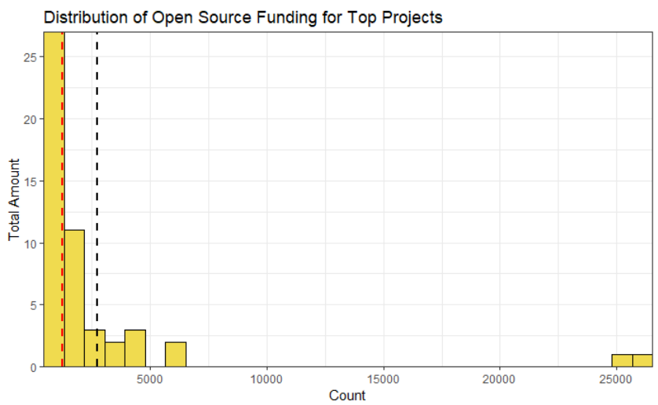
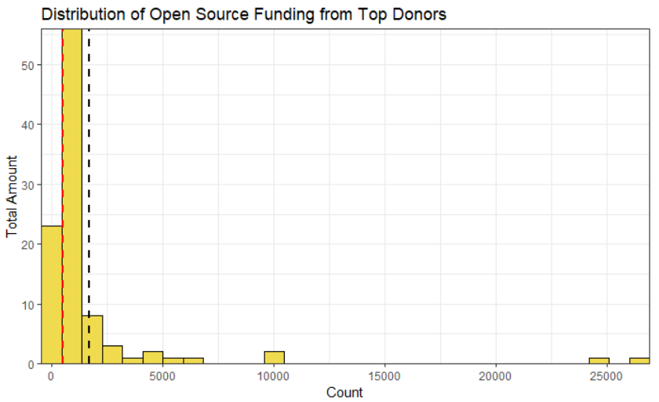
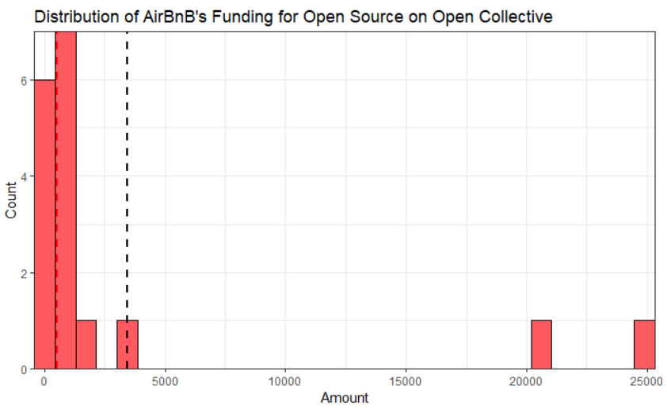

In my research, I recently ran into a website called Open Collective, which manages the funding for open source projects, primarily JavaScript related open source projects.
They conveniently had an open data set so I took the liberty to analyze the data and the results are fascinating.
Firstly, a chart on the monthly funding for the top projects on Open Collective:
 Data collected from the open data folder Open Collective possesses.
| Min | 1st Q | Median | Mean | 3rd Q | Max |
|---|---|---|---|---|---|
| 773 | 1004 | 1259 | 2746 | 2157 | 26000 |
The two projects on the far right for reference, are Webpack and Babel.js respectively.
The summary statistics reveal a picture that shows that at least on Open Collective, the funding that open source projects receive follows a power law distribution of sorts. Specifically, they follow a Pareto distribution. For reference, the Pareto distribution as invented by Vilfredo Pareto, an Italian economist, states that a large portion of something is held by a small portion of the population. In popular usage this is known as the 80-20 rule.
Considering the Webpack and Babel.js make more than 10x the amount in donations then the 3rd quartile, it is fair to consider this as a example of power law in action.
This also seems to hold for the top contributors on Open Collective as well. The skew was even worse in the original dataset, but an outlier had to be removed because they were donating to a project that they themselves run, so the cyclical nature of their donation meant it felt unfair to include them in the data.

| Min | 1st Q | Median | Mean | 3rd Q | Max |
|---|---|---|---|---|---|
| 250 | 500 | 500 | 1188 | 1050 | 26700 |
AMP and Moduscreate, the 1st and 2nd most prolific donators for the month, donated more then 24-25x the mean backer. Again, it is fair to consider this an example of a power rule in action.
The summary statistics for the backers manage to even more skewed then the summary statistics for the individual projects, considering the difference is 24-25x versus 10x for projects.
One can notice the power law distribution when looking at specific backers as well. On Back Your Stack, a website associated with Open Collective, one can see how much a company funds projects that are key part of their stack.
For reference, stack refers to what technological tools a company uses.
This includes languages(Python, JavaScript, C++, Ect...),
databases(SQL, NoSQL, Graph Database, Ect),
and in general, any technical tool a company uses to manage or create their product. To show case this, below via Back Your Stack and Open Collective data, is Airbnb’s funding for open source projects are reported by Open Collective.

| Min | 1st Q | Median | Mean | 3rd Q | Max |
|---|---|---|---|---|---|
| 10 | 330 | 528 | 3421 | 1287 | 24910 |
Like before, the top two projects, Babel.js and Webpack make roughly over 20x more than the any project around the 3rd quartile. The median is also very much skewed to the right due to the size of those two projects.
Thoughts
To start, it is strange that basically all the projects listed are JavaScript projects. While there are plenty of projects in other languages that are need of funding, such as the Requests package in Python or tools like SSH, they are not listed here. While it is known that JavaScript compared to many programming languages has a massive open source community, it is odd that projects in other languages are not represented as much on Open Collective.
Secondly, while I had suspicions that this was the case, it was good to confirm that the funding of open source projects indeed follows a power law distribution where the largest projects receive most of the funding. While it makes sense that the largest projects would receive most of the funding, this can lead to trouble, as sometimes projects might be important, but due to being viewed as boring, they do not receive as much attention/funding as they should.
More research needs to be done, mainly because data on the funding distribution of projects in other languages is needed. Seeing how the open source funding ecosystem between languages changes is also a goal to be pursued.